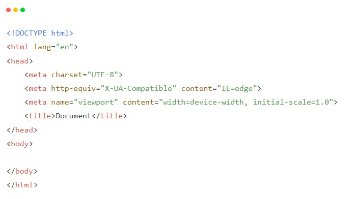
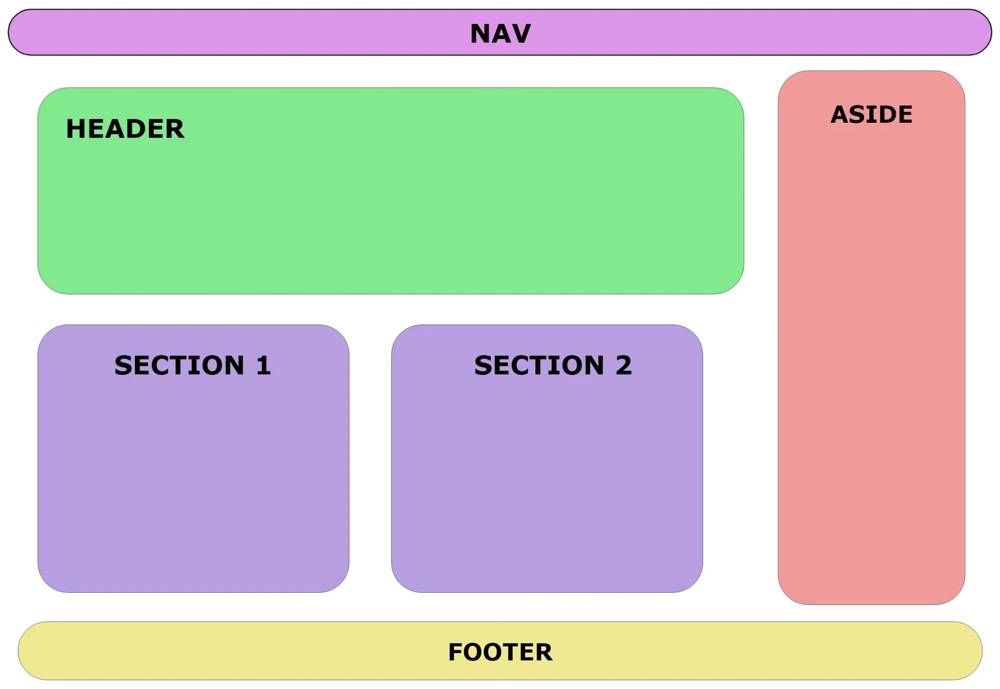
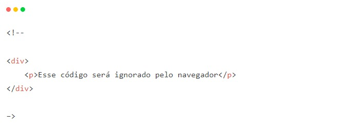

As tags são formadas por uma estrutura própria, iniciam com o sinal “menor que”, em seguida vem o nome daquele elemento e por fim, o sinal “maior que”. Podem ser dispostas em tags que precisam de fechamento e tags que fecham sozinhas (self-closing). O fechamento de uma tag será definido com uma barra (/), sendo que no caso das tags de auto fechamento, não há necessidade da presença desse caractere.
As tags podem ser categorizadas inicialmente em dois tipos, em “nível de bloco” (block-level) e “em linha” (inline). Um elemento em nível de bloco ocupa toda a largura de seu elemento pai, que também chamamos de elemento container, criando assim um “bloco”. Já os elementos inline, geralmente usamos para demarcação de conteúdos de texto.
O VS Code utiliza por padrão o Emmet Abbreviations, que traz o aparecimento automático de linhas de código que fazem parte da estrutura básica do HTML ao digitar o ponto de exclamação.
Resultado:
Informa ao navegador que esse documento é do tipo HTML e sua versão. Quando está escrito apenas html, indica que é a mais recente...
Representa a raiz do documento, serve com um container que engloba todos os outros elementos HTML.
É onde fica todo o conteúdo de texto, imagem e vídeos, em que o usuário vê e interage, nele os conteúdos são estruturados pelas demais tags do HTML.
Esse elemento contém instruções de script ou aponta para um arquivo de script externo por meio do atributo src.
Compreende as informações do documento que serão interpretadas pelo navegador (metadados). Como por exemplo, título do documento, links para folhas de estilo etc.
Define metadados, ou seja, informações sobre dados de um documento HTML. As < meta > tags vão dentro do elemento < head > e são usadas para especificar o conjunto de caracteres, o autor do documento, as configurações da janela de visualização etc.
É uma tag vazia, que contém apenas atributos e faz a relação do documento HTML com recursos externos, é comumente usado para vincular uma folha de estilo externa, também é usada para definir o favicon da página (ícone da aba do navegador), como outros recursos.
Essa tag é usada para declarar estilos (CSS) para um documento.
Tags semânticas são tags que possuem um significado, que dão sentido a informação de texto ao navegador e buscadores, como por exemplo, utilizar a tag < header > para cabeçalhos ou < article > para dar um significado de artigo para aquele bloco de texto, até mesmo
para indicar que aquele texto é um parágrafo, é uma boa prática tentar sempre utilizar essas tags semânticas para ajudar no entendimento do código, além de ajudar muito no SEO do site (Otimização para motores de busca, é o que ajuda o seu site a se rankear melhor nos motores de buscas como o Google). Segue abaixo a lista de tags semânticas citadas durante o artigo:
Exemplo de estruturação com tags semânticas:
As tags que não possuem semântica não definem um significado para aquele texto, normalmente são utilizadas apenas para fins de separação e estilização. Veja logo abaixo a lista de algumas tags sem semântica:
Comentários no HTML ou em qualquer outra linguagem são notas que podem ser incluídas no código fonte para descrever o que se quiser. Assim, não modificam o programa executado e servem somente para ajudar a pessoa que está desenvolvendo a melhor organizar os seus códigos. Para comentar algum código no HTML você deve envolvê-lo entre < !-- Seu código aqui –>. Por exemplo:
fonte: https://www.alura.com.br/artigos/o-que-e-html-suas-tags-parte-1-estrutura-basica